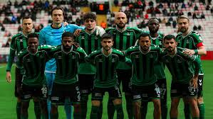

Takımımız Hakkında
Sakaryaspor, 1965 yılında Sakarya ilinde kurulmuş profesyonel futbol takımıdır. Yeşil-beyaz renklerle mücadele eden takım, Türk futbolunun köklü kulüplerinden biridir. Sakarya'daki yerel kulüplerin bir araya gelmesiyle kurulan ve kısa sürede kentin ortak değeri haline gelen köklü bir futbol kulübüdür.
Yeşil-siyahlı renkleriyle özdeşleşen takım, yıllar boyunca hem alt liglerde hem de üst liglerde sergilediği mücadeleci futbol anlayışıyla taraftarın büyük sevgisini kazanmıştır. Kulüp, sadece saha sonuçlarıyla değil; altyapıya verdiği önem, şehrin futbol kültürüne yaptığı katkı ve tribünde oluşan güçlü aidiyet duygusuyla da öne çıkar.
Kulüp Bilgileri
| Bilgi | Değer |
|---|---|
| Kuruluş Yılı | 1965 |
| Renkler | Yeşil — Beyaz |
| Stadyum | Sakarya Atatürk Stadyumu |
| Stadyum Kapasitesi | 28.950 |
| Lig | TFF 1. Lig |
| Şehir | Sakarya |
Stadyum Bilgileri
| Özellik | Detay |
|---|---|
| Ad | Sakarya Atatürk Stadyumu |
| Kapasite | 28.950 seyirci |
| Yer | Adapazarı, Sakarya |
| Zemin | Doğal çim |
Başarıları
| Sezon | Başarı |
|---|---|
| 1987-1988 | Türkiye Kupası Şampiyonluğu |
| 1988 | Başbakanlık Kupası |
| 2021-2022 | TFF 2. Lig Şampiyonluğu (1. Lig'e yükselme) |
